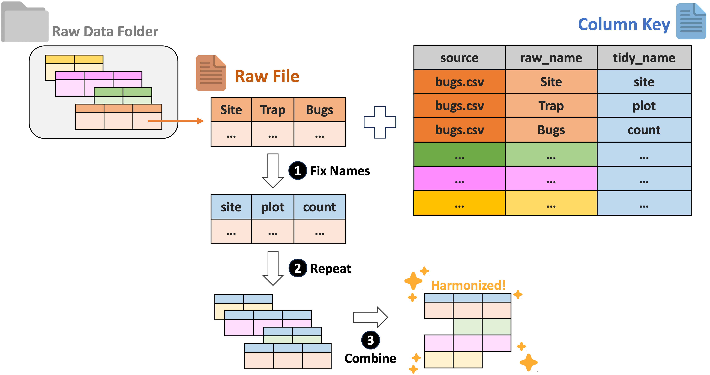
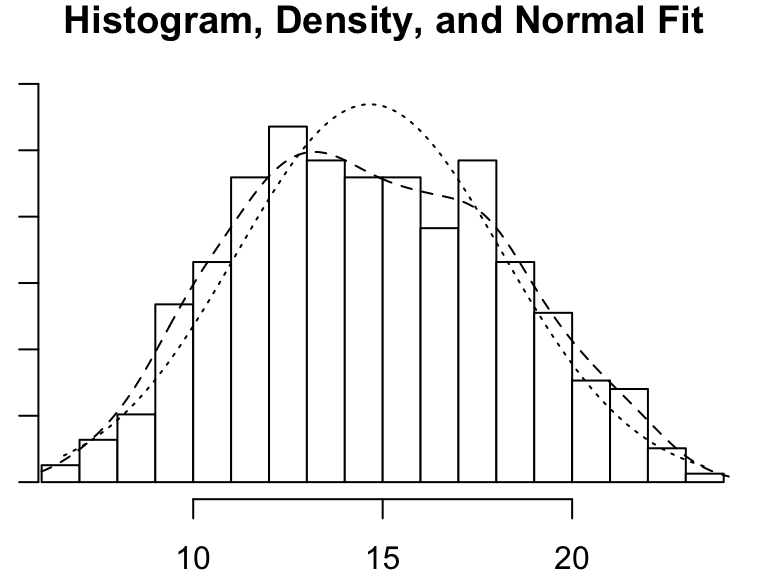
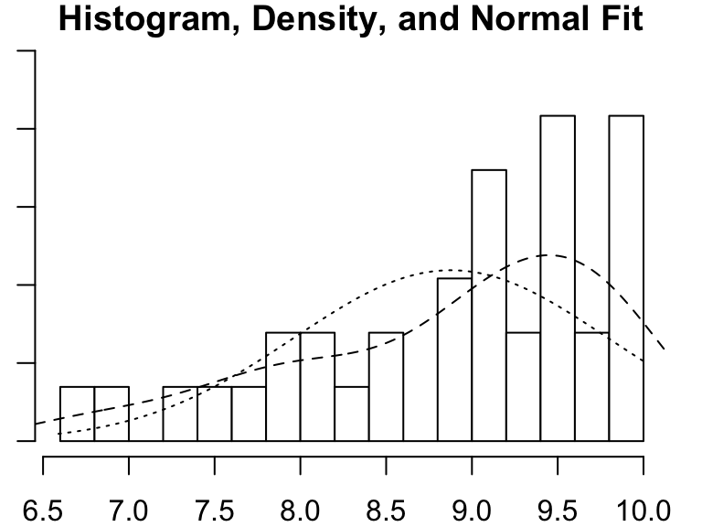
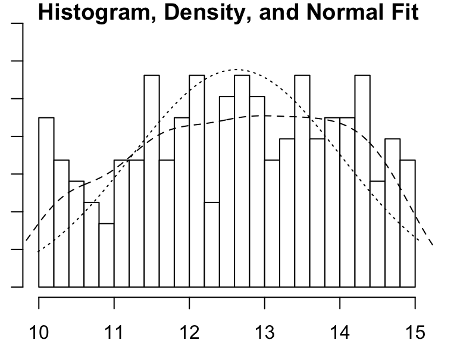

# Note that these lines only need to be run once per computer
## So you can skip this step if you've installed these before
install.packages("ltertools")
install.packages("lterdatasampler")
install.packages("psych")
install.packages("supportR")
install.packages("tidyverse")Data Harmonization & Wrangling
Overview
Now that we have covered how to find data and use data visualization methods to explore it, we can move on to combining separate data files and preparing that combined data file for analysis. For the purposes of this module we’re adopting a very narrow view of harmonization and a very broad view of wrangling but this distinction aligns well with two discrete philosophical/practical arenas. To make those definitions explicit:
“Harmonization” = process of combining separate primary data objects into one object. This includes things like synonymizing columns, or changing data format to support combination. This excludes quality control steps–even those that are undertaken before harmonization begins.
“Wrangling” = all modifications to data meant to create an analysis-ready ‘tidy’ data object. This includes quality control, unit conversions, and data ‘shape’ changes to name a few. Note that attaching ancillary data to your primary data object (e.g., attaching temperature data to a dataset on plant species composition) also falls into this category!
Learning Objectives
After completing this module you will be able to:
- Identify typical steps in data harmonization and wrangling workflows
- Create a harmonization workflow
- Define quality control
- Summarize typical operations in a quality control workflow
- Use regular expressions to perform flexible text operations
- Write custom functions to reduce code duplication
- Identify value of and typical obstacles to data ‘joining’
- Explain benefits and drawbacks of using data shape to streamline code
- Design a complete data wrangling workflow
Needed Packages
If you’d like to follow along with the code chunks included throughout this module, you’ll need to install the following packages:
We’ll load the Tidyverse meta-package here to have access to many of its useful tools when we need them later.
# Load tidyverse
library(tidyverse)Harmonizing Data
Data harmonization is an interesting topic in that it is vital for synthesis projects but only very rarely relevant for primary research. Synthesis projects must reckon with the data choices made by each team of original data collectors. These collectors may or may not have recorded their judgement calls (or indeed, any metadata) but before synthesis work can be meaningfully done these independent datasets must be made comparable to one another and combined.
For tabular data, we recommend using the ltertools R package to perform any needed harmonization. This package relies on a “column key” to translate the original column names into equivalents that apply across all datasets. Users can generate this column key however they would like but Google Sheets is a strong option as it allows multiple synthesis team members to simultaneously work on filling in the needed bits of the key. If you already have a set of files locally, ltertools does offer a begin_key function that creates the first two required columns in the column key.
The column key requires three columns:
- “source” – Name of the raw file
- “raw_name” – Name of all raw columns in that file to be synonymized
- “tidy_name” – New name for each raw column that should be carried to the harmonized data
Note that any raw names either not included in the column key or that lack a tidy name equivalent will be excluded from the final data object. For more information, consult the ltertools package vignette. For convenience, we’re attaching the visual diagram of this method of harmonization from the package vignette.

Wrangling Data
Data wrangling is a huge subject that covers a wide range of topics. In this part of the module, we’ll attempt to touch on a wide range of tools that may prove valuable to your data wrangling efforts. This is certainly non-exhaustive and you’ll likely find new tools that fit your coding style and professional intuition better. However, hopefully the topics covered below provide a nice ‘jumping off’ point to reproducibly prepare your data for analysis and visualization work later in the lifecycle of the project.
To begin, we’ll load the Plum Island Ecosystems fiddler crab dataset we’ve used in other modules.
# Load the lterdatasampler package
library(lterdatasampler)
# Load the fiddler crab dataset
data(pie_crab)Exploring the Data
Before beginning any code operations, it’s important to get a sense for the data. Characteristics like the dimensions of the dataset, the column names, and the type of information stored in each column are all crucial pre-requisites to knowing what tools can or should be used on the data.
Checking the data structure is one way of getting a lot of this high-level information.
# Check dataset structure
str(pie_crab)tibble [392 × 9] (S3: tbl_df/tbl/data.frame)
$ date : Date[1:392], format: "2016-07-24" "2016-07-24" ...
$ latitude : num [1:392] 30 30 30 30 30 30 30 30 30 30 ...
$ site : chr [1:392] "GTM" "GTM" "GTM" "GTM" ...
$ size : num [1:392] 12.4 14.2 14.5 12.9 12.4 ...
$ air_temp : num [1:392] 21.8 21.8 21.8 21.8 21.8 ...
$ air_temp_sd : num [1:392] 6.39 6.39 6.39 6.39 6.39 ...
$ water_temp : num [1:392] 24.5 24.5 24.5 24.5 24.5 ...
$ water_temp_sd: num [1:392] 6.12 6.12 6.12 6.12 6.12 ...
$ name : chr [1:392] "Guana Tolomoto Matanzas NERR" "Guana Tolomoto Matanzas NERR" "Guana Tolomoto Matanzas NERR" "Guana Tolomoto Matanzas NERR" ...For data that are primarily numeric, you may find data summary functions to be valuable. Note that most functions of this type do not provide useful information on text columns so you’ll need to find that information elsewhere.
# Get a simple summary of the data
summary(pie_crab) date latitude site size
Min. :2016-07-24 Min. :30.00 Length:392 Min. : 6.64
1st Qu.:2016-07-28 1st Qu.:34.00 Class :character 1st Qu.:12.02
Median :2016-08-01 Median :39.10 Mode :character Median :14.44
Mean :2016-08-02 Mean :37.69 Mean :14.66
3rd Qu.:2016-08-09 3rd Qu.:41.60 3rd Qu.:17.34
Max. :2016-08-13 Max. :42.70 Max. :23.43
air_temp air_temp_sd water_temp water_temp_sd
Min. :10.29 Min. :6.391 Min. :13.98 Min. :4.838
1st Qu.:12.05 1st Qu.:8.110 1st Qu.:14.33 1st Qu.:6.567
Median :13.93 Median :8.410 Median :17.50 Median :6.998
Mean :15.20 Mean :8.654 Mean :17.65 Mean :7.252
3rd Qu.:18.63 3rd Qu.:9.483 3rd Qu.:20.54 3rd Qu.:7.865
Max. :21.79 Max. :9.965 Max. :24.50 Max. :9.121
name
Length:392
Class :character
Mode :character
For text columns it can sometimes be useful to simply look at the unique entries in a given column and sort them alphabetically for ease of parsing.
# Look at the sites included in the data
sort(unique(pie_crab$site)) [1] "BC" "CC" "CT" "DB" "GTM" "JC" "NB" "NIB" "PIE" "RC" "SI" "VCR"
[13] "ZI" For those of you who think more visually, a histogram can be a nice way of examining numeric data. There are simple histogram functions in the ‘base’ packages of most programming languages but it can sometimes be worth it to use those from special libraries because they can often convey additional detail.
# Load the psych library
library(psych)
# Get the histogram of crab "size" (carapace width in mm)
psych::multi.hist(pie_crab$size)
Quality Control
You may have encountered the phrase “QA/QC” (Quality Assurance / Quality Control) in relation to data cleaning. Technically, quality assurance only encapsulates preventative measures for reducing errors. One example of QA would be using a template for field datasheets because using standard fields reduces the risk that data are recorded inconsistently and/or incompletely. Quality control on the other hand refers to all steps taken to resolve errors after data are collected. Any code that you write to fix typos or remove outliers from a dataset falls under the umbrella of QC.
In synthesis work, QA is only very rarely an option. You’ll be working with datasets that have already been collected and attempting to handle any issues post hoc which means the vast majority of data wrangling operations will be quality control methods. These QC efforts can be incredibly time-consuming so using a programming language (like R or Python) is a dramatic improvement over manually looking through the data using Microsoft Excel or other programs like it.
Number Checking
When you read in a dataset and a column that should be numeric is instead read in as a character, it can be a sign that there are malformed numbers lurking in the background. Checking for and resolving these non-numbers is preferable to simply coercing the column into being numeric because the latter method typically changes those values to ‘NA’ where a human might be able to deduce the true number each value ‘should be.’
# Load the supportR package
library(supportR)
# Create an example dataset with non-numbers in ideally numeric columns
fish_ct <- data.frame("species" = c("salmon", "bass", "halibut", "moray eel"),
"count" = c(12, "14x", "_23", 1))
# Check for malformed numbers in column(s) that should be numeric
bad_nums <- supportR::num_check(data = fish_ct, col = "count")For 'count', 2 non-numbers identified: '14x' | '_23'In the above example, “14x” would be coerced to NA if you simply force the column without checking but you could drop the “x” with text replacing methods once you use tools like this one to flag it for your attention.
Text Replacement
One of the simpler ways of handling text issues is just to replace a string with another string. Most programming languages support this functionality.
# Use pattern match/replace to simplify problem entries
fish_ct$count <- gsub(pattern = "x|_", replacement = "", x = fish_ct$count)
# Check that they are fixed
bad_nums <- supportR::num_check(data = fish_ct, col = "count")For 'count', no non-numeric values identified.The vertical line in the gsub example above lets us search for (and replace) multiple patterns. Note however that while you can search for many patterns at once, only a single replacement value can be provided with this function.
Regular Expressions
You may sometimes want to perform more generic string matching where you don’t necessarily know–or want to list–all possible strings to find and replace. For instance, you may want remove any letter in a numeric column or find and replace numbers with some sort of text note. “Regular expressions” are how programmers specify these generic matches and using them can be a nice way of streamlining code.
# Make a test vector
regex_vec <- c("hello", "123", "goodbye", "456")
# Find all numbers and replace with the letter X
gsub(pattern = "[[:digit:]]", replacement = "x", x = regex_vec)[1] "hello" "xxx" "goodbye" "xxx" # Replace any number of letters with only a single 0
gsub(pattern = "[[:alpha:]]+", replacement = "0", x = regex_vec)[1] "0" "123" "0" "456"The stringr package cheatsheet has a really nice list of regular expression options that you may find valuable if you want to delve deeper on this topic. Scroll to the second page of the PDF to see the most relevant parts.
Conditionals
Rather than finding and replacing content, you may want to create a new column based on the contents of a different column. In plain language you might phrase this as ‘if column X has [some values] then column Y should have [other values]’. These operations are called conditionals and are an important part of data wrangling.
If you only want your conditional to support two outcomes (as in an either/or statement) there are useful functions that support this. Let’s return to our Plum Island Ecosystems crab dataset for an example.
# Make a new colum with an either/or conditional
pie_crab_v2 <- pie_crab %>%
dplyr::mutate(size_category = ifelse(test = (size >= 15),
yes = "big",
no = "small"),
.after = size)
# Count the number of crabs in each category
pie_crab_v2 %>%
dplyr::group_by(size_category) %>%
dplyr::summarize(crab_ct = dplyr::n())- 1
-
mutatemakes a new column,ifelseis actually doing the conditional
# A tibble: 2 × 2
size_category crab_ct
<chr> <int>
1 big 179
2 small 213If you have multiple different conditions you can just stack these either/or conditionals together but this gets cumbersome quickly. It is preferable to instead use a function that supports as many alternates as you want!
# Make a new column with several conditionals
pie_crab_v2 <- pie_crab %>%
dplyr::mutate(size_category = dplyr::case_when(
size <= 10 ~ "tiny",
size > 10 & size <= 15 ~ "small",
size > 15 & size <= 20 ~ "big",
size > 20 ~ "huge",
TRUE ~ "uncategorized"),
.after = size)
# Count the number of crabs in each category
pie_crab_v2 %>%
dplyr::group_by(size_category) %>%
dplyr::summarize(crab_ct = dplyr::n())- 1
- Syntax is ‘test ~ what to do when true’
- 2
- This line is a catch-all for any rows that don’t meet previous conditions
# A tibble: 4 × 2
size_category crab_ct
<chr> <int>
1 big 150
2 huge 28
3 small 178
4 tiny 36Note that you can use functions like this one when you do have an either/or conditional if you prefer this format.
Uniting / Separating Columns
Sometimes one column has multiple pieces of information that you’d like to consider separately. A date column is a common example of this because particular months are always in a given season regardless of the specific day or year. So, it can be useful to break a complete date (i.e., year/month/day) into its component bits to be better able to access those pieces of information.
# Split date into each piece of temporal info
pie_crab_v3 <- pie_crab_v2 %>%
tidyr::separate_wider_delim(cols = date,
delim = "-",
names = c("year", "month", "day"),
cols_remove = TRUE)
# Check that out
str(pie_crab_v3)- 1
- ‘delim’ is short for “delimiter” which we covered in the Reproducibility module
- 2
- This argument specifies whether to remove the original column when making the new columns
tibble [392 × 12] (S3: tbl_df/tbl/data.frame)
$ year : chr [1:392] "2016" "2016" "2016" "2016" ...
$ month : chr [1:392] "07" "07" "07" "07" ...
$ day : chr [1:392] "24" "24" "24" "24" ...
$ latitude : num [1:392] 30 30 30 30 30 30 30 30 30 30 ...
$ site : chr [1:392] "GTM" "GTM" "GTM" "GTM" ...
$ size : num [1:392] 12.4 14.2 14.5 12.9 12.4 ...
$ size_category: chr [1:392] "small" "small" "small" "small" ...
$ air_temp : num [1:392] 21.8 21.8 21.8 21.8 21.8 ...
$ air_temp_sd : num [1:392] 6.39 6.39 6.39 6.39 6.39 ...
$ water_temp : num [1:392] 24.5 24.5 24.5 24.5 24.5 ...
$ water_temp_sd: num [1:392] 6.12 6.12 6.12 6.12 6.12 ...
$ name : chr [1:392] "Guana Tolomoto Matanzas NERR" "Guana Tolomoto Matanzas NERR" "Guana Tolomoto Matanzas NERR" "Guana Tolomoto Matanzas NERR" ...While breaking apart a column’s contents can be useful, it can also be helpful to combine the contents of several columns!
# Re-combine data information back into date
pie_crab_v4 <- pie_crab_v3 %>%
tidyr::unite(col = "date",
sep = "/",
year:day,
remove = FALSE)
# Structure check
str(pie_crab_v4)- 1
- This is equivalent to the ‘delim’ argument in the previous function
- 2
- Comparable to the ‘cols_remove’ argument in the previous function
tibble [392 × 13] (S3: tbl_df/tbl/data.frame)
$ date : chr [1:392] "2016/07/24" "2016/07/24" "2016/07/24" "2016/07/24" ...
$ year : chr [1:392] "2016" "2016" "2016" "2016" ...
$ month : chr [1:392] "07" "07" "07" "07" ...
$ day : chr [1:392] "24" "24" "24" "24" ...
$ latitude : num [1:392] 30 30 30 30 30 30 30 30 30 30 ...
$ site : chr [1:392] "GTM" "GTM" "GTM" "GTM" ...
$ size : num [1:392] 12.4 14.2 14.5 12.9 12.4 ...
$ size_category: chr [1:392] "small" "small" "small" "small" ...
$ air_temp : num [1:392] 21.8 21.8 21.8 21.8 21.8 ...
$ air_temp_sd : num [1:392] 6.39 6.39 6.39 6.39 6.39 ...
$ water_temp : num [1:392] 24.5 24.5 24.5 24.5 24.5 ...
$ water_temp_sd: num [1:392] 6.12 6.12 6.12 6.12 6.12 ...
$ name : chr [1:392] "Guana Tolomoto Matanzas NERR" "Guana Tolomoto Matanzas NERR" "Guana Tolomoto Matanzas NERR" "Guana Tolomoto Matanzas NERR" ...Note in this output how despite re-combining data information the column is listed as a character column! Simply combining or separating data is not always enough so you need to really lean into frequent data structure checks to be sure that your data are structured in the way that you want.
Joining Data
Often the early steps of a synthesis project involve combining the data tables horizontally. You might imagine that you have two groups’ data on sea star abundance and–once you’ve synonymized the column names–you can simply ‘stack’ the tables on top of one another. Slightly trickier but no less common is combining tables by the contents of a shared column (or columns). Cases like this include wanting to combine your sea star table with ocean temperature data from the region of each group’s research. You can’t simply attach the columns because that assumes that the row order is identical between the two data tables (and indeed, that there are the same number of rows in both to begin with!). In this case, if both data tables shared some columns (perhaps “site” and coordinate columns) you can use joins to let your computer match these key columns and make sure that only appropriate rows are combined.
Because joins are completely dependent upon the value in both columns being an exact match, it is a good idea to carefully check the contents of those columns before attempting a join to make sure that the join will be successful.
# Create a fish taxonomy dataframe that corresponds with the earlier fish dataframe
fish_tax <- data.frame("species" = c("salmon", "bass", "halibut", "eel"),
"family" = c("Salmonidae", "Serranidae", "Pleuronectidae", "Muraenidae"))
# Check to make sure that the 'species' column matches between both tables
supportR::diff_check(old = fish_ct$species, new = fish_tax$species) Following element(s) found in old object but not new: [1] "moray eel"Following element(s) found in new object but not old: [1] "eel"# Use text replacement methods to fix that mistake in one table
fish_tax_v2 <- fish_tax %>%
dplyr::mutate(species = gsub(pattern = "^eel$",
replacement = "moray eel",
x = species))
# Re-check to make sure that fixed it
supportR::diff_check(old = fish_ct$species, new = fish_tax_v2$species)- 1
- The symbols around “eel” mean that we’re only finding/replacing exact matches. It doesn’t matter in this context but often replacing a partial match would result in more problems. For example, replacing “eel” with “moray eel” could make “electric eel” into “electric moray eel”.
All elements of old object found in newAll elements of new object found in oldNow that the shared column matches between the two two dataframes we can use a join to combine them! There are four types of join:
- left/right join
- full join (a.k.a. outer join)
- inner join
- anti join
You can learn more about the types of join here or here but the quick explanation is that the name of the join indicates whether the rows of the “left” and/or the “right” table are retained in the combined table. In synthesis work a left join or full join is most common (where you have your primary data in the left position and some ancillary/supplementary dataset in the right position).
# Let's combine the fish count and fish taxonomy information
fish_df <- fish_ct %>%
# Actual join step
dplyr::left_join(y = fish_tax_v2, by = "species") %>%
# Move 'family' column to the left of all other columns
dplyr::relocate(family, .before = dplyr::everything())
# Look at the result of that
fish_df- 1
- The ‘by’ argument accepts a vector of column names found in both data tables
family species count
1 Salmonidae salmon 12
2 Serranidae bass 14
3 Pleuronectidae halibut 23
4 Muraenidae moray eel 1Leveraging Data Shape
You may already be familiar with data shape but fewer people recognize how playing with the shape of data can make certain operations dramatically more efficient. If you haven’t encountered it before, any data table can be said to have one of two ‘shapes’: either long or wide. Wide data have all measured variables from a single observation in one row (typically resulting in more columns than rows or “wider” data tables). Long data usually have one observation split into many rows (typically resulting in more rows than columns or “longer” data tables).
Data shape is often important for statistical analysis or visualization but it has an under-appreciated role to play in quality control efforts as well. If many columns have the shared criteria for what constitutes “tidy”, you can reshape the data to get all of those values into a single column (i.e., reshape longer), perform any needed wrangling, then–when you’re finished–reshape back into the original data shape (i.e., reshape wider). As opposed to applying the same operations repeatedly to each column individually.
Let’s consider an example to help clarify this. We’ll simulate a butterfly dataset where both the number of different species and their sex were recorded in the same column. This makes the column not technically numeric and therefore unusable in analysis or visualization.
# Generate a butterfly dataframe
bfly_v1 <- data.frame("pasture" = c("PNW", "PNW", "RCS", "RCS"),
"monarch" = c("14m", "10f", "7m", "16f"),
"melissa_blue" = c("32m", "2f", "6m", "0f"),
"swallowtail" = c("1m", "3f", "0m", "5f"))
# First we'll reshape this into long format
bfly_v2 <- bfly_v1 %>%
tidyr::pivot_longer(cols = -pasture,
names_to = "butterfly_sp",
values_to = "count_sex")
# Check what that leaves us with
head(bfly_v2, n = 4)# A tibble: 4 × 3
pasture butterfly_sp count_sex
<chr> <chr> <chr>
1 PNW monarch 14m
2 PNW melissa_blue 32m
3 PNW swallowtail 1m
4 PNW monarch 10f # Let's separate count from sex to be more usable later
bfly_v3 <- bfly_v2 %>%
tidyr::separate_wider_regex(cols = count_sex,
c(count = "[[:digit:]]+", sex = "[[:alpha:]]")) %>%
# Make the 'count' column a real number now
dplyr::mutate(count = as.numeric(count))
# Re-check output
head(bfly_v3, n = 4)# A tibble: 4 × 4
pasture butterfly_sp count sex
<chr> <chr> <dbl> <chr>
1 PNW monarch 14 m
2 PNW melissa_blue 32 m
3 PNW swallowtail 1 m
4 PNW monarch 10 f # Reshape back into wide-ish format
bfly_v4 <- bfly_v3 %>%
tidyr::pivot_wider(names_from = "butterfly_sp", values_from = count)
# Re-re-check output
head(bfly_v4)# A tibble: 4 × 5
pasture sex monarch melissa_blue swallowtail
<chr> <chr> <dbl> <dbl> <dbl>
1 PNW m 14 32 1
2 PNW f 10 2 3
3 RCS m 7 6 0
4 RCS f 16 0 5While we absolutely could have used the same function to break apart count and butterfly sex data it would have involved copy/pasting the same information repeatedly. By pivoting to long format first, we can greatly streamline our code. This can also be advantageous for unit conversions, applying data transformations, or checking text column contents among many other possible applications.
Loops
Another way of simplfying repetitive operations is to use a “for loop” (often called simply “loops”). Loops allow you to iterate across a piece of code for a set number of times. Loops require you to define an “index” object that will change itself at the end of each iteration of the loop before beginning the next iteration. This index object’s identity will be determined by whatever set of values you define at the top of the loop.
Here’s a very bare bones example to demonstrate the fundamentals.
# Loop across each number between 2 and 4
for(k in 2:4){
# Square the number
result <- k^2
# Message that outside of the loop
message(k, " squared is ", result)
}- 1
- ‘k’ is our index object in this loop
- 2
-
Note that the operations to iterate across are wrapped in curly braces (
{...})
2 squared is 43 squared is 94 squared is 16Once you get the hang of loops, they can be a nice way of simplifying your code in a relatively human-readable way! Let’s return to our Plum Island Ecosystems crab dataset for a more nuanced example.
# Create an empty list
crab_list <- list()
# Let's loop across size categories of crab
for(focal_size in unique(pie_crab_v4$size_category)){
# Subset the data to just this size category
focal_df <- pie_crab_v4 %>%
dplyr::filter(size_category == focal_size)
# Calculate average and standard deviation of size within this category
size_avg <- mean(focal_df$size, na.rm = T)
size_dev <- sd(focal_df$size, na.rm = T)
# Assemble this into a data table and add to our list
crab_list[[focal_size]] <- data.frame("size_category" = focal_size,
"size_mean" = size_avg,
"size_sd" = size_dev)
} # Close loop
# Unlist the outputs into a dataframe
crab_df <- purrr::list_rbind(x = crab_list)
# Check out the resulting data table
crab_df- 1
- Note that this is not the most efficient way of doing group-wise summarization but is–hopefully–a nice demonstration of loops!
- 2
-
When all elements of your list have the same column names,
list_rbindefficiently stacks those elements into one longer data table.
size_category size_mean size_sd
1 small 12.624270 1.3827471
2 tiny 8.876944 0.9112686
3 big 17.238267 1.3650173
4 huge 21.196786 0.8276744Custom Functions
Finally, writing your own, customized functions can be really useful particularly when doing synthesis work. Custom functions are generally useful for reducing duplication and increasing ease of maintenance (see the note on custom functions in the SSECR Reproducibility module) and also can be useful end products of synthesis work in and of themselves.
If one of your group’s outputs is a new standard data format or analytical workflow, the functions that you develop to aid yourself become valuable to anyone who adopts your synthesis project’s findings into their own workflows. If you get enough functions you can even release a package that others can install and use on their own computers. Such packages are a valuable product of synthesis efforts and can be a nice addition to a robust scientific resume/CV.
# Define custom function
crab_hist <- function(df, size_cat){
# Subset data to the desired category
data_sub <- dplyr::filter(.data = df, size_category == size_cat)
# Create a histogram
p <- psych::multi.hist(x = data_sub$size)
}
# Invoke function
crab_hist(df = pie_crab_v4, size_cat = "tiny")
When writing your own functions it can also be useful to program defensively. This involves anticipating likely errors and writing your own error messages that are more informative to the user than whatever machine-generated error would otherwise get generated
# Define custom function
crab_hist <- function(df, size_cat = "small"){
# Error out if 'df' isn't the right format
if(is.data.frame(df) != TRUE)
stop("'df' must be provided as a data frame")
# Error out if the data doesn't have the right columns
if(all(c("size_category", "size") %in% names(df)) != TRUE)
stop("'df' must include a 'size' and 'size_category' column")
# Error out for unsupported size category values
if(size_cat %in% unique(df$size_category) != TRUE)
stop("Specified 'size_cat' not found in provided data")
# Subset data to the desired category
data_sub <- dplyr::filter(.data = df, size_category == size_cat)
# Create a histogram
p <- psych::multi.hist(x = data_sub$size)
}
# Invoke new-and-improved function
crab_hist(df = pie_crab_v4)- 1
- The default category is now set to “small”
- 2
- We recommend phrasing your error checks with this format (i.e., ’if <some condition> is not true, then <informative error/warning message>)
- 3
-
The
%in%operator lets you check whether one value matches any element of a set of accepted values. Very useful in contexts like this because the alternative would be a lot of separate “or” conditionals - 4
- We don’t need to specify the ‘size_cat’ argument because we can rely on the default

Additional Resources
Papers & Documents
- Reviews and Syntheses: The Promise of Big Diverse Soil Data, Moving Current Practices Towards Future Potential. Todd-Brown, K.E.O. et al., 2022. Biogeosciences
- The Ultimate Guide to Data Cleaning. Elgarby, O. 2019. Medium
- Some Simple Guidelines for Effective Data Management. Borer, E. et al., 2009. Ecological Society of America Bulletin
Workshops & Courses
- Data Analysis and Visualization in R for Ecologists, Episode 4: Manipulating, Analyzing, and Exporting Data with
tidyverse. The Carpentries - Coding in the Tidyverse. NCEAS Scientific Computing Team, 2023.
- NCEAS Learning Hub’s coreR Course, Chapter 8: Cleaning & Wrangling Data. NCEAS Learning Hub, 2023.
- NCEAS Learning Hub’s coreR Course, Chapter 16: Writing Functions & Packages. NCEAS Learning Hub, 2023.
- Open Science Synthesis for the Delta Science Program’s Data Munging / QA / QC / Cleaning